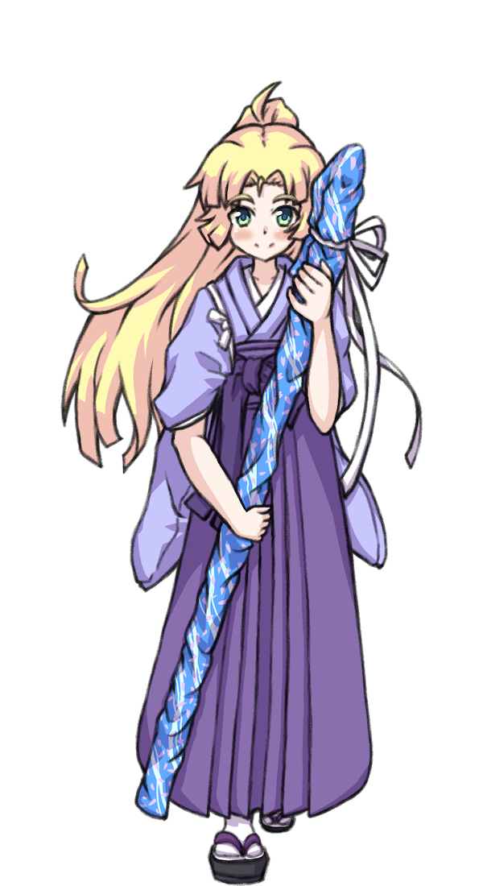

ＰＣの作成手順について解説します。
1パーソナリティ
まずは、ＰＣの名前や、性別、年齢などを決めます。
“ハレの力を使える”以外に設定の制限は無いので、自由に考えてください。
2クラス
クラスとは、ＰＣの思想や性質を表すものです。
ＰＣは、自らの普段の姿を示す表層クラスと、心の内に秘めた感情である深層クラスの、２つのクラスを持ちます。
それぞれ、ステータスの値と、習得できるスキルに影響します。詳しい説明は各項目内で行いますので、そちらを見ながら選んでください。
下記のクラスの中から、表層クラスと深層クラスを１つずつ選択します。両方とも同じものを選択しても構いません。
アジテイター
人の目と心を惹きつける者のクラスです。
〈勇気〉と〈自制〉に優れています。
強い【印象】を与えたり、自身や味方を強化するスキルが使えます。
パッショニスタ
胸に秘めきれない情熱を持つ者のクラスです。
〈勇気〉と〈愛情〉に優れています。
デメリットや使用条件を持つものの、強力な効果を持つスキルが使えます。
ジーニアス
豊富な知識を持つ者のクラスです。
〈知恵〉と〈自制〉に優れています。
自身に有利な効果を持つスキルが使えます。
トリックスター
知恵に優れる者のクラスです。
〈勇気〉と〈知恵〉に優れています。
メリットとデメリットを併せ持つスキルが使えます。
サーヴァント
他者を気遣う者のクラスです。
〈愛情〉と〈自制〉に優れています。
エリア移動に関するスキルが使えます。

メンター
成長を促す者のクラスです。
〈知恵〉と〈愛情〉に優れています。
味方を強化したり、複数人に【印象】を与えるスキルが使えます。
イノセンス
無垢なる魅力を持つ者のクラスです。
ステータスは一切上昇しませんが、その分強力なスキルが使えます。
3ステータス
ステータスには〈勇気〉〈知恵〉〈愛情〉〈自制〉の４つがあります。それぞれにはレベルがあり、「〈博愛〉２」のように表記されます。
〈勇気〉〈知恵〉〈愛情〉は、判定での達成値算出に使用します。〈自制〉は、判定時にキープできるダイスの数となります。
クラスごとのステータス
ステータスは、表層クラスと深層クラスの両方の値を合算して求めます。
各ステータスの初期値は１なので、それに以下の値を足してください。
| クラス | 〈勇気〉 | 〈知恵〉 | 〈愛情〉 | 〈自制〉 |
|---|---|---|---|---|
| アジテイター | ＋１ | ±０ | ±０ | ＋１ |
| パッショニスタ | ＋１ | ±０ | ＋１ | ±０ |
| ジーニアス | ±０ | ＋１ | ±０ | ＋１ |
| トリックスター | ＋１ | ＋１ | ±０ | ±０ |
| サーヴァント | ±０ | ±０ | ＋１ | ＋１ |
| メンター | ±０ | ＋１ | ＋１ | ±０ |
| イノセンス | ±０ | ±０ | ±０ | ±０ |
4スキル
4-2基本スキルの自動習得
【調査】【交流】【干渉】【拒絶】を習得します。
4-3表層スキルの習得
表層クラスのスキルを２つ習得します。
4-4深層スキルの習得
深層クラスのスキルを２つ習得します。
EXリビルド
セッションとセッションの間、表層クラスを別のものに変更することが可能です。